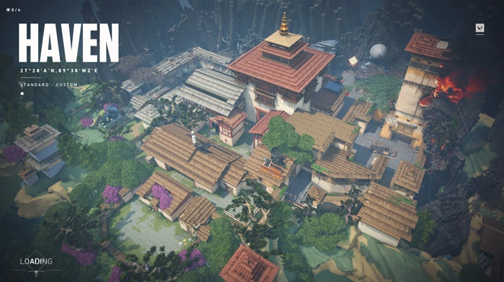

HAVEN
Haven est la plus grande map, mais elle est la moins spacieuse, en raison des nombreux détails qu'elle présente.Elle dispose de 3 sites, A, B & C et est donc plus facilement défendable.Tout comme bind, le site A de Haven dispose d'une fenêtre en hauteur permettant la défense avec un opérator, il y a deux chemins possible pour y aller.Le site B est le middle, celui-ci est plus facile à prendre mais plus dur à garder. Il dispose de 3 entrées. Le site C est le plus spacieux, deux chemins permettent d'y accèder sois un long chemin sois passer par un garage (meilleur position de défense pour l'agent Cypher)